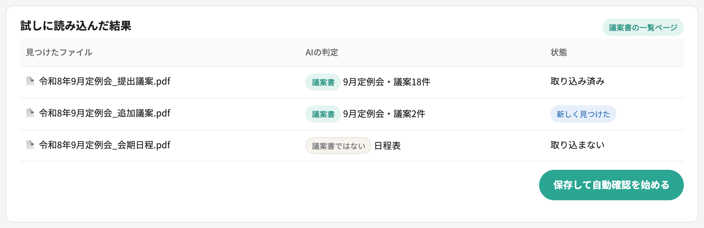
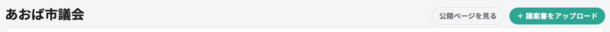
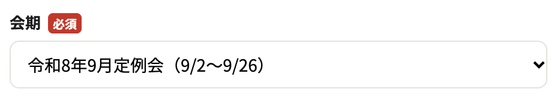
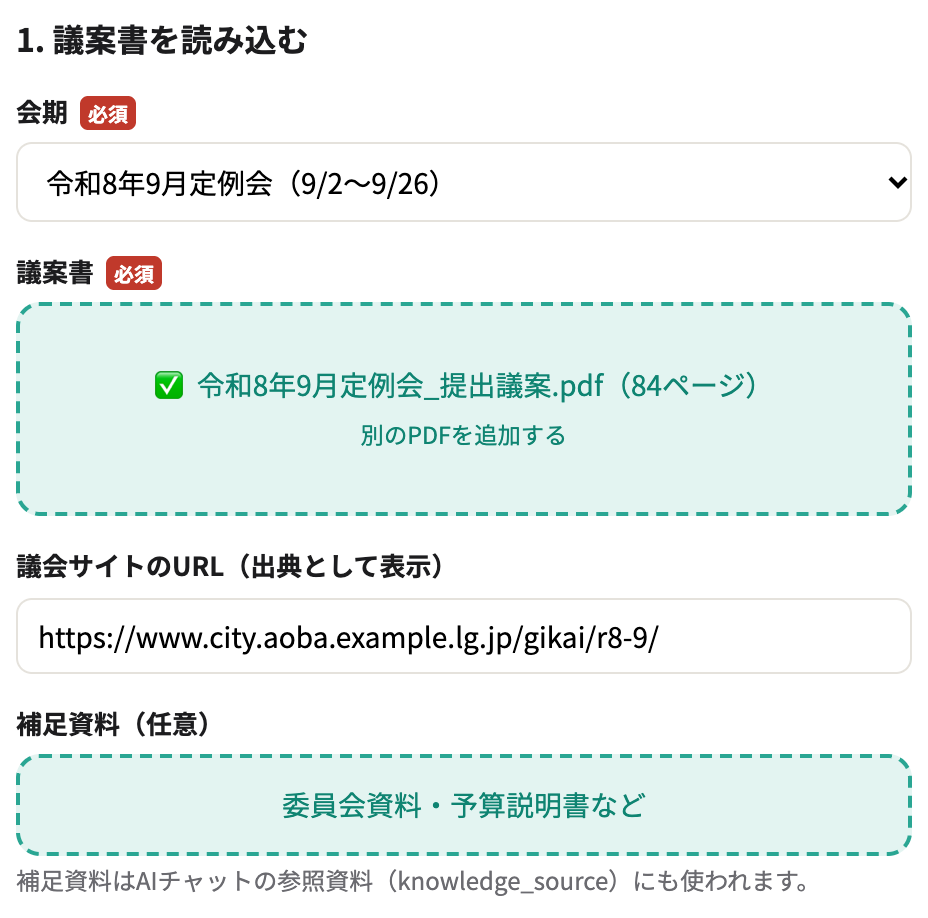
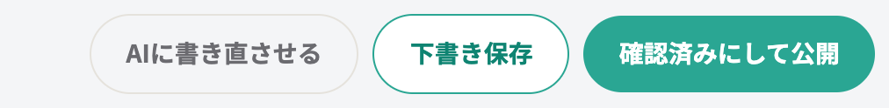
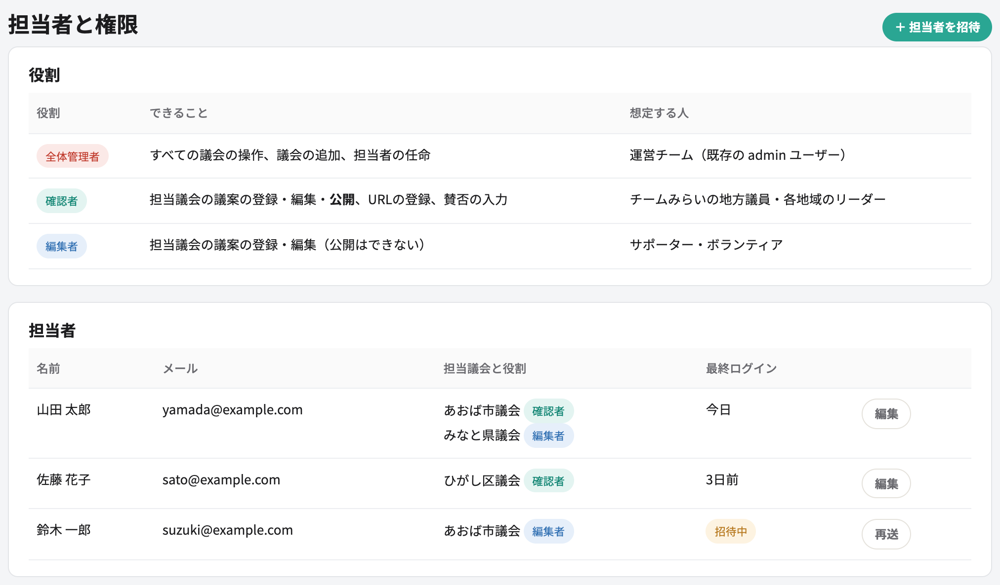

地方版みらい議会 使い方ガイド
地方版みらい議会は、都道府県議会・市区町村議会の議案をわかりやすく解説し、住民の声を議会に届けるサービスです。 自治体ごとに別のサイトを作るのではなく、議会の公式サイトにある議案書・議事録の一覧ページのURLを登録すれば、その議会のページが自動でできあがります。 このガイドでは、見る人・運営する人それぞれの使い方を説明します。
1. 全体の流れ
議案書が公開されてから、住民の声が議員に届くまでの大きな流れです。 担当者が要約を一から書く必要はありません。AIが議案書を見つけて下書きを作り、人はそれを確認します。
2. 議案を見る・意見を伝える（住民）
3. 議案書・議事録のURLを登録する（担当者）
議案書と議事録は、ほとんどの議会で公式サイトに一覧ページがあります。 そのURLを1度登録すれば、新しい議案書や議事録が載るたびに自動で取り込みます。 議会ごとに最初に1回だけ行う作業です。
「提出議案」「議案書」「本会議の日程」など。会期ごとに議案書のPDFが並んでいるページ
「会議録」「会議録検索システム」など。委員会の議事録もあれば、審議の内容まで読み取れる

会期ごとのページなど、一覧のもう一段奥のページ。それでも見つからなければ、議案書PDFを手動でアップロードする（→ 4章）
読み込みに失敗したとき
4. 議案を登録して公開する（担当者）
担当者のいちばん大事な作業です。URLを登録していれば議案書は自動で読み込まれるので、担当者は解説の要否を選んで、下書きを確認するだけです。



表示タイトル・解説（ふつう／くわしく）・AIチャットの参照資料

確認のチェックポイント
- 金額・人数・日付・施行日が原文と一致しているか
- 「誰に」「何が」「いつから」変わるのかが書かれているか
- 賛成・反対どちらかに寄った書き方になっていないか（解説は中立に。意見は賛否の欄に書く）
- 専門用語が「ふつう」の解説に残っていないか
5. 議事録で審議の進み具合を更新する（担当者）
議事録は会議の数週間後に公開されます。登録した議事録の一覧ページから自動で見つけ、議案ごとに審議の内容と結果を読み取ります。 担当者は、反映してよいかを確認するだけです。
どの議案の話か、付託された委員会、可決／否決／継続審査
6. 会期末の作業（担当者）
地方議会では、議案の採決は会期の最終日の本会議でまとめて行われることがほとんどです。 議事録が公開されるのは数週間後なので、採決結果は会期末に手で入れます。議事録が出たら、5章の流れで内容を補います。
継続審査になった議案は、次の定例会の一覧にも引き継いで表示します。
7. 新しい議会を立ち上げる（運営）
全国の議会はあらかじめ「マスタのみ」の状態で登録されています。担当者が見つかった議会から順に立ち上げます。

8. 状態の移り変わり
議会
URL登録（議案書・議事録の一覧ページ）
議案の解説
議案の審議
9. よくある質問
Q. AIの下書きはそのまま公開されますか？
されません。公開できるのは確認者だけで、公開ページには「AIが下書きし、担当者が確認した」ことと確認日を表示します。
Q. 住民が議案書を送ることはできますか？
できません。議案書は、担当者が登録したURLから自動で取り込むか、担当者がアップロードします。
Q. チームみらいの議員がいない議会でも使えますか？
使えます。その場合、議案ページに「チームみらいの賛否」の欄は出ません。 意見の届け先がない議会では、インタビューを出さずにAIチャットだけにすることもできます。
Q. 議案書がPDFではなく、議会サイトのページに直接書かれています
そのページを議案書の一覧ページとして登録してください。AIがページの内容を読み取ります。
Q. 議案書が議会サイトに載らない議会はどうすればいいですか？
紙で配られる議案書は、スキャンしたPDFや写真をアップロード画面から登録できます。
Q. 議案が多すぎて全部は確認しきれません
予算や条例など、生活に影響の大きい議案から公開してください。 人事案件などは分割後にチェックを外して、解説を作らないこともできます。
Q. 解説に間違いを見つけました
担当者は公開後も編集できます。修正すると、公開ページの確認日が更新されます。